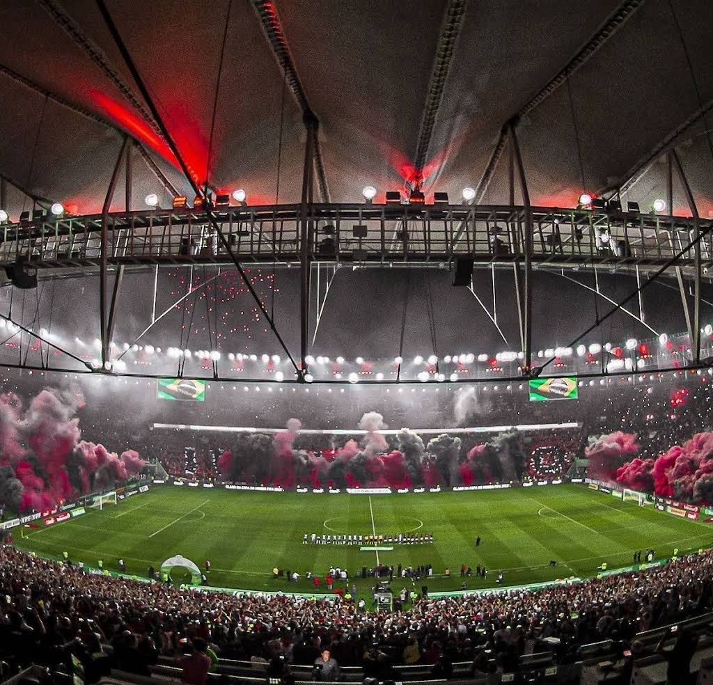
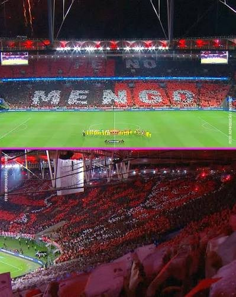

Do remo na Praia do Flamengo às arquibancadas do Maracanã.
Como tudo começou
1895: um clube de remo
O Flamengo foi fundado em por um grupo de jovens remadores que se reuniam na Praia do Flamengo, no Rio de Janeiro. Por isso o nome oficial é Clube de Regatas do Flamengo. Na época, o remo era o esporte mais popular da cidade, muito mais que o futebol.
1911: chega o futebol
Em 1911, um grupo de jogadores do Fluminense saiu do clube depois de uma briga interna e foi para o Flamengo. Com eles, o Rubro-Negro criou o seu departamento de futebol. Foi o começo do Fla-Flu, um dos clássicos mais famosos do Brasil.
As cores e o manto
As cores do clube são o vermelho e o preto. A camisa listrada ficou tão ligada à torcida que ganhou o apelido de "manto sagrado".
Uma curiosidade: o primeiro uniforme de futebol era dividido em quadrados azuis e dourados e acabou apelidado de "papagaio de vintém". Depois de algumas mudanças, o clube adotou as listras horizontais vermelhas e pretas que conhecemos hoje.
O Maracanã e a maior torcida

O Maracanã, casa do Flamengo nos jogos mais importantes.
O Flamengo manda seus jogos no Maracanã, inaugurado para a Copa do Mundo de 1950. Com o tempo, o estádio virou praticamente a casa do clube e é onde a torcida, chamada de Nação Rubro-Negra, faz as suas maiores festas.
Veja no mapa onde fica o estádio:

A Nação Rubro-Negra fazendo mosaico com a palavra "MENGO" no Maracanã.
A geração de ouro dos anos 80
Entre o fim dos anos 70 e o começo dos anos 80, o Flamengo montou um dos maiores times da sua história, com Zico, Júnior, Leandro, Adílio, Andrade e Nunes. Em 1981 esse time ganhou a Libertadores e, em dezembro, venceu o Liverpool por 3 a 0 em Tóquio, conquistando o mundo.
Craque, o Flamengo faz em casa.
Quem fez os gols contra o Liverpool em 1981?
Nunes marcou duas vezes e Adílio fez o outro gol. Zico não marcou, mas participou das jogadas dos três gols e foi eleito o melhor da partida.
O que é o Ninho do Urubu?
É o apelido do Centro de Treinamento George Helal, onde o time profissional e as categorias de base treinam, na zona oeste do Rio.